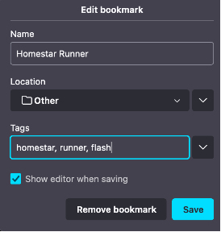

Browser Alzheimer's - Link Rot in My Bookmarks
2024-02-17
I've been around the internet for a while now. Most days, it's longer than I realize. I recall several "eras" of the connected age, ranging from the "appointment internet" time period with dial-up on traditional desktop PCs, to the "terminally online" life that most suffer from today, accessible from rectangles that coexist with pocket lint. While many factors of internet life have certainly changed over time, one of the weird little things that I've managed to keep somewhat consistently chronicled in the long term have been my web browser bookmarks. I don't know why, but I really latched onto this feature starting as far back as the Internet Explorer 6.0 days, carrying forth into Mozilla Firefox all the way into present day. Even now, I can fire up the "Manage Bookmarks" feature of Firefox and have a look at hundreds of saved URLs that either are or were of significance to me from the 2000s to today. However, I am faced with an ever-increasing problem; quite a few of these links no longer go to their original destinations and often now redirect to random junk sites. That's right - my browser bookmarks have a case of Alzheimer's.
Bookmarks?
The good ol' "CTRL + D"
The method in which folks access the internet has changed over time, and it is my belief that the reasoning for this has to do with, surprise surprise, the general advances of technology combined with shifting paradigms of how we use the internet (more on that in a bit). When I first got on the world wide web, it was in a time period where someone would make a conscious effort to sit at a traditional desktop computer, open a web browser, and go to a web site. There was no such thing as casually scrolling through a website on a phone at the grocery store (well, maybe for a very limited set of folks with VERY fancy phones, but otherwise, nope, wasn't yet a thing). For some, that might have included even going to AOL and entering what was known as a "keyword" to get them to where they wanted to go ("AOL Keyword: Nick!"). Later on, that was replaced by traditional search engines. Or maybe perhaps you just knew the website's URL from memory (who can forget the commercials and music for freeconferencecall.com, honestly?). Once you got to whatever website you wanted to go to, one could choose to use a feature of the web browser known as bookmarking to save the site in a handy list in the application on your computer, enabling you to easily return to the site later on without having to search for the site or type its address. In modern times, I frequently read about folks lamenting how their computers are slowed down due to somehow having hundreds of open tabs, and I never quite understood this, largely due to my experience with utilizing browser bookmarks versus open tabs, the latter of which refrain from actively sapping up system resources or cluttering the user interface.
Using the bookmarks feature of the web browser for me meant that I could easily get to the login page for my email, get to GameFAQs easily to look up a guide for The Legend of Zelda: Majora's Mask, jump to Wikipedia to read whatever article of the day was on the front page, or get to whatever page or site I thought was interesting. As I eventually graduated from the family desktop to my own system, I learned that browser bookmarks were exportable and could be brought with me to whatever computer I wanted to have them on. When Mozilla Firefox hit the scene, it introduced the ability to import browser data (including bookmarks) from Internet Explorer, further expanding the portability of this list of sites increased in value to me over time, as I never stopped using the feature. Firefox even expanded upon the bookmarks feature when they added the ability to assign "tags" to bookmarks which allowed for more convenient searching of these bookmarks based on keywords I could assign. Combine this with Firefox's "Awesome Bar" and you had one powerful means of accessing your own personal Rolodex (ask your parents, kids) of favorite web destinations.
As computers and smartphones became more of a commodity combined with internet access becoming faster and more generally accessible, services such as Dropbox (among others) began to introduce the concept of syncing files and data across multiple devices, negating the need for having to perform manual backups, imports, and synchronizations via the means of sneakernet (again, ask your parents). One standout feature was Firefox Sync, which allowed one to sync their bookmarks across multiple computers running Firefox if one linked the systems together using Firefox's connected infrastructure. From there, one could bookmark something from one system running Firefox and it would show up on the other linked system running Firefox in a matter of minutes. For a brief period there was also the rise and fall of competing bookmark sync platforms such as del.icio.us, Xmarks, and plenty of others, that of which attempted to sync bookmarks across all kinds of browsers such as Internet Explorer, Safari, Firefox, and Google Chrome. Nowadays, nearly all of these web browsers have the bookmark and data sync features on by default via account-based synchronization in modern times, but only for their own flavors as opposed to cross-browser sync. You still need to manually export/import if you want to do that, unless a new sync app exists that I'm not aware of. Personally I just keep the bookmark syncing duties with Firefox and try to use it on every platform I use.
Tangent aside, what's the actual problem here?
As I'm rediscovering sites, I find I'm starting to bookmark pages more frequently, almost at the rate that I did in the 2000s and early 2010s. This has led me to go back into my rather large bookmarks collection and attempt to re-organize things a bit, but this has led to a bit of a problem; most of these links no longer work. They lead me to "page not found" errors, squatted domains, or worse, malicious redirects. My bookmarks retain the URL, the original site title, and maybe the favicon from the old days, but aside from this, things look grim. One saving grace is that I've been able to locate archived copies of a lot of these sites by going to the Wayback Machine and plunking the URL into the search box, often finding a snapshot of the page from a certain date. The farther I go back, the more successful I tend to be in finding a page that matches.
A few recent and random examples came to mind:
- MyFaceWhen, a funny little site that contained a smattering of reaction gifs and photos. The site appeared to go under some time in the 2010s, but luckily it's at least partially saved thanks to the Wayback Machine.
- Insanely Wind - a forum dedicated to doing fun things with the MSI Wind u100 netbook (including somehow installing Mac OS X Snow Leopard). This site seems to have been erased off the internet entirely, with no archive that I've found as of yet.
- The Very Best of the Berks Meme - An article doing ham on one of the more popular memes of the early 2010s. Salvaged courtesy of the Wayback Machine.
- A detailed guide on how to understand and fix lag and choke in Counter-Strike Source. CS Source was a less popular version of Counter-Strike, so maybe this is why the article was more susceptible to link-rottification, but thanksfully, the Wayback Machine comes through once again.
As we move forward in time, I'm finding more and more of my bookmarks end up requiring me to go hunting on the Wayback Machine to hope I can find a copy of the site frozen in amber. Nothing lasts forever, even on the internet, but we can at least go down swinging.
How do we fix this / Can we even fix this?
Considering the vastness and surprising ephemerality of the internet, I'm not sure we have many ways to fix the problem at a wide scale. I think the only real method of saving old sites after they are shut down/acquired/changed is to make sure the Internet Archive remains alive and healthy. Over the years I've experimented with several browser extensions that attempt to scan and fix bookmarks, but unfortunately I've yet to find one that truly does what I would like it to do without a lot of manual intervention. Many sites that contain Wayback Machine archives may not be that exact website you visited in the old days, and at worst it could even end up being an archived version of a link farm or the state the article was in after it went down. Also maybe consider promoting and encouraging sites to keep their content online and unmodified for as long as humanly possible. The issue arises however when large corporations (and perhaps governments) come into play, as well as when sites are acquired by other large sites, leading to consolidation, reorganization, shutdowns, and all kinds of boring yet destructive actions. Which leads me to my next topic....
Web 1.0-core and pushback against enshittification
So, what's the big deal with all this then? Well, in recent times I (as well as quite a bit of other folks on the internet lately it seems) have been on this "old internet discourse" kick in which folks recount, celebrate, and lament a different era of the web in which things weren't nearly as centered around five or so main websites. More folks had their own personal websites they hand-built (and btw, you're looking at one), content was more varied and wild, designs had more organic aesthetics, and overall the internet felt more like an interesting and diverse space to browse as opposed to what might feel like a chore or detriment in current times. There's plenty of sites that summarize this, but I found this one particular page chronicling writeups about the "old internet" to be the most comprehensive. Sites such as neocities have been attempting to revive the "90s core" personal website community, and in my opinion it's been going swimmingly well, considering it has me frequently randomly browsing and clicking websites with eye-grabbing retro-inspired designs. Most of these websites serve to be a mostly unidirectional stream of information to the viewer with no option to interact, which was effectively the core experience of the "Web 1.0 era." Sites that pour someone's heart out in regards to their special interest were the dominant force in these times, and sites like neocities attempt to bring that all back.
We can also talk about the general enshittification (or "enshirtification" if you need to be SFW) of the web. TL;DR it effectively means the slow-yet-persistent process of big websites making the experience worse and worse for users for the benefit of their own financial success. Things like nickel-and-diming people for basic features that used to be free, asking the user to opt in to multitudes of invasive privacy and tracking agreements even for the most generic products, breaking the enjoyment of content with inappropriate and egregious quantities of ads (YouTube...), or scummy dark pattern maneuvers to steer you towards buying products that cozied up with the parent company (Amazon). As a sidebar I'd highly recommend doing general internet searches for enshittification to find great writeups about it, in particular, this article on Wired does a great job explaining things.
The modern internet seems to make it more difficult to maintain a healthy static webpage infrastructure, and in recent times, enshittification in particular seems to often actively work against this the most. We can only hope that things course-correct a little bit. The state of bookmarks is haphazard, a lot of article URLs can be long and prone to change as backend content delivery networks (CDNs) update without respect to the original link's existence. Sloppy redirects will sometimes even just shoot you back to the website's main page instead of to the new location of the article (if it still exists).
What now?
I'm not entirely sure how to end this blog post. I can't definitely offer a genuine solution to this problem other than manually hunting and pecking for an archived copy of a bookmark. Discovery remains an issue when it comes to noticing if a bookmark went bad, with the process of fixing the bookmark often being just as perplexing. Do we settle for the method of finding an archived copy? Do we rally in the streets campaigning for better content preservation? Do we waste time by writing a 2000+ word blog post? I honestly don't know. The most I can do is air out my grievances and talk about it, and I hope this helps someone who encounters a similar problem.